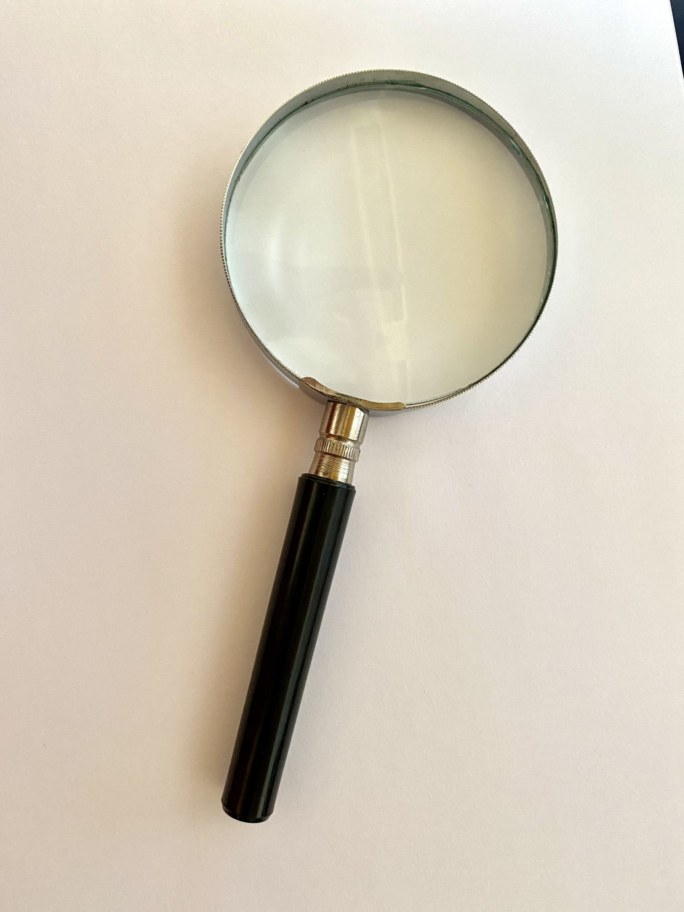
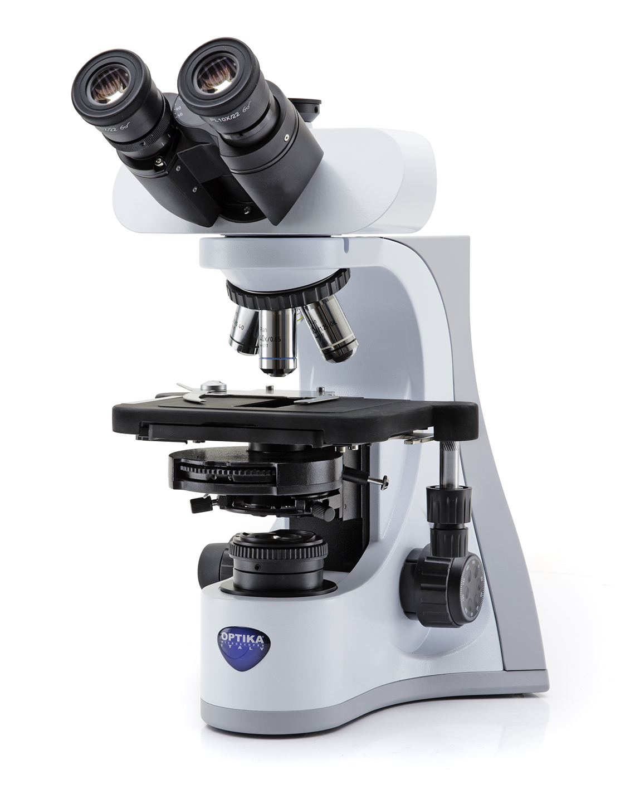
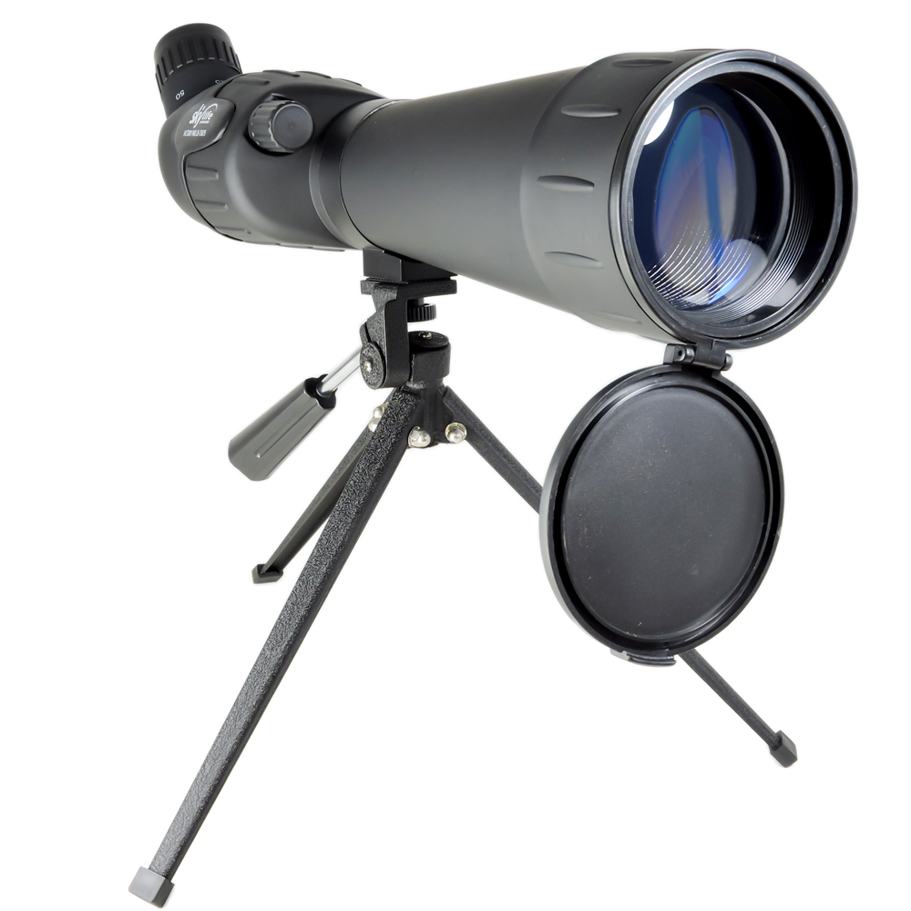
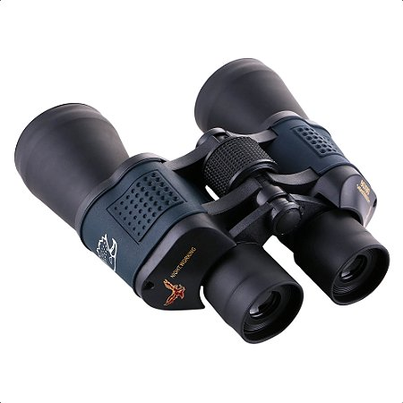

Lupa

A lupa e um dos objetos opticos mais faceis de se adiquirir. Pode ser encontrada em qualquer loja. E um instrumento optico simples, formado por uma unica lente convergente, que serve para criar imagens virtuais ampliadas de objetos proximos. Ela facilita a visualizaçao de pequenos detalhes, texturas e letras miudas que sao dificeis de enxergar a olho nu.
Microscópio

O microscópio é uma ferramenta de muita importância, principalmente na área da medicina. É complexo, tendo diferentes versões, como o óptico(fotônico), que tem capacidade de aumento de até 1000X a 2000X, eletrônico, tem até 500.000X ou mais, e o estereoscópico, geralmente até 100x. Sendo eles todos instrumentos ópticos utilizados para ampliar a imagem de objetos minúsculos.
Luneta

A luneta pode ser chamada também pelo nome de telescópio refrator. Tendo dois tipos, Terrestre, usada para observação de paisagens, aves, navios e natureza, Astronômica, usada para observação da lua, planetas vizinhos e constelações. Ambas auxiliam e facilitam a visualização de coisas distantes.
Binóculos

Funcionam essencialmente como duas lunetas terrestres acopladas, mas utilizam prismas internamente para dobrar o caminho da luz, permitindo encurtar o tamanho do aparelho e reverter a imagem para o sentido correto.
Glossário de termos
- Fotônico
- Refere-se ao que é relativo àfotônica, a ciência e tecnologia que estuda a geração,manipulação, transmissão e detecção de fótons(as partículasfundamentais da luz).
- Estereoscópico
- Popularmente conhecido como lupa binocular. O "Estereoscópico" é um adjetivo utilizado para descrever qualquer objeto, fenômeno, sistema ou imagem que produz, utiliza ou está relacionado à ilusão de relevo e profundidade em três dimensões (3D).
Video Demonstrativo
Assista abaixo a uma demonstração prática de como funcionam os principais instrumentos ópticos: